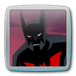
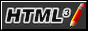
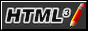
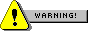
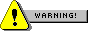
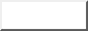
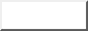

Cześć! Tu Nexon
Mam 15 lat i pochodzę z Polski 🇵🇱. Interesuję się technologią, uwielbiam naprawiać oraz modyfikować elektronikę, a także odkrywać, jak działają różne urządzenia. Lubię również tworzyć strony internetowe – to dla mnie fajny sposób na naukę i rozwijanie kreatywności. Od niedawna jestem członkiem The Relive Team, gdzie zdobywam pierwsze doświadczenia w pracy nad projektami. Nie jestem jeszcze świetnym programistą, ale znam podstawy C++, a także HTML i CSS i staram się cały czas uczyć nowych rzeczy. Chciałbym zaznaczyć, iż wygląd strony jest zrobiony przez patricktbp
. W planach mam stworzenie zupełnie nowej strony internetowej dla The Relive Team, z lepszym wyglądem. Dodatkowo planuję zrobić własną modyfikację systemu bazującą na Windows 10 LTSC 2021, która będzie nosić nazwę ReliveX – będzie to modyfikacja idealna dla graczy, głównie dzięki świetnej optymalizacji, ale też dopracowanemu wyglądowi.
Możesz mnie znaleźć i porozmawiać ze mną na serwerze Discord The Relive Team, śledzić moje materiały na moim kanale YouTube, przeglądać moje projekty oraz kod źródłowy na GitHubie, a także oczywiście odkrywać nowe treści bezpośrednio tutaj, na tej stronie. Jeśli wolisz kontakt bardziej bezpośredni, możesz również napisać do mnie maila: devnexonpl@gmail.com.


 

 



 
